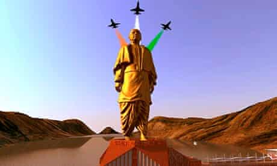
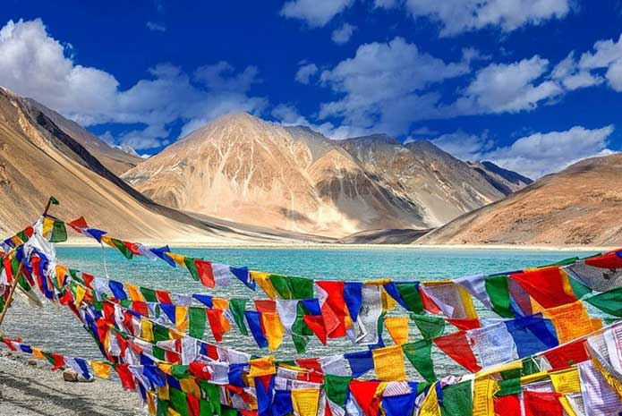
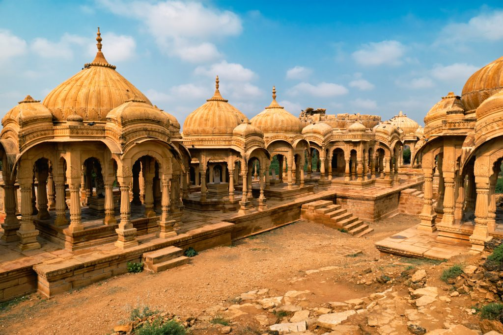

| Destination | Details |
|---|
| Statue of Unity | The Statue of Unity is a statue of Indian statesman and independence activist Vallabhbhai Patel (1875–1950), who was the first deputy prime minister and home minister of independent India and an adherent of Mahatma Gandhi |
Taj mahal | The Taj Mahal was designated as a UNESCO World Heritage Site in 1983 for being "the jewel of Muslim art in India and one of the universally admired masterpieces of the world's heritage". It is regarded by many as the best example of Mughal architecture and a symbol of India's rich history. The Taj Mahal attracts more than 6 million visitors a year[3] and in 2007, it was declared a winner of the New 7 Wonders of the World (2000–2007) initiative. |
| Ladakh | Ladakh is a region administered by India as a union territory, and constitutes a part of the larger Kashmir region, which has been the subject of dispute between India, Pakistan, and China since 1947. |
Kerala | Kerala, a state on India's tropical Malabar Coast, has nearly 600km of Arabian Sea shoreline. It's known for its palm-lined beaches and backwaters, a network of canals. Inland are the Western Ghats, mountains whose slopes support tea, coffee and spice plantations as well as wildlife. National parks like Eravikulam and Periyar, plus Wayanad and other sanctuaries, are home to elephants, langur monkeys and tigers. |
Jaipur | Jaipur is the capital of India’s Rajasthan state. It evokes the royal family that once ruled the region and that, in 1727, founded what is now called the Old City, or “Pink City” for its trademark building color. At the center of its stately street grid (notable in India) stands the opulent, colonnaded City Palace complex. With gardens, courtyards and museums, part of it is still a royal residence. |
| Jaislmer | Jaisalmer is a former medieval trading center and a princely state in the western Indian state of Rajasthan, in the heart of the Thar Desert. Known as the "Golden City," it's distinguished by its yellow sandstone architecture. Dominating the skyline is Jaisalmer Fort, a sprawling hilltop citadel buttressed by 99 bastions. Behind its massive walls stand the ornate Maharaja's Palace and intricately carved Jain temples |
Gate way of India | Description The Gateway of India is an arch-monument built in the early 20th century in the city of Mumbai, also known as Bombay, India. It was erected to commemorate the landing of King-Emperor George V, the first British monarch to visit India, in December 1911 at Ramchandani Road near Shyamaprasad Mukherjee Chowk in Mumbai. |